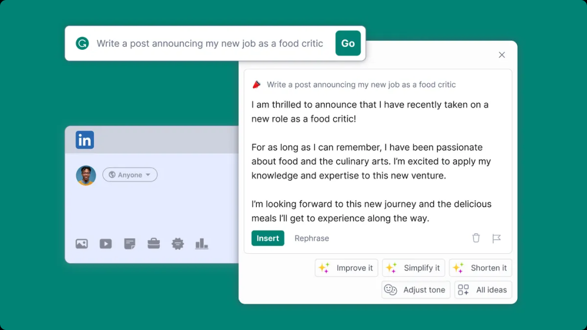
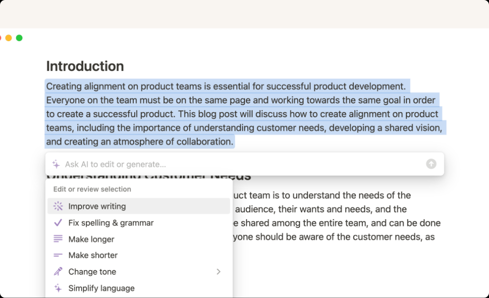
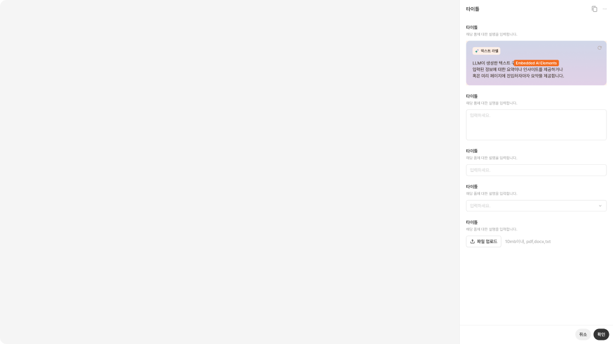
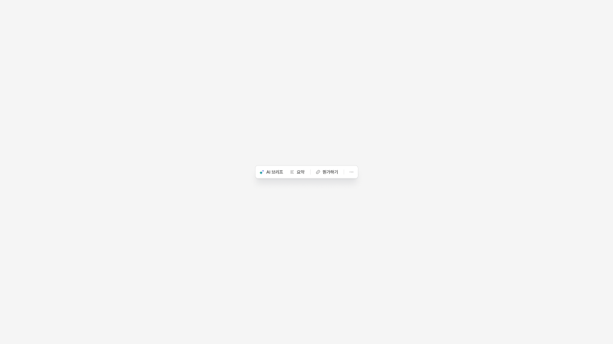
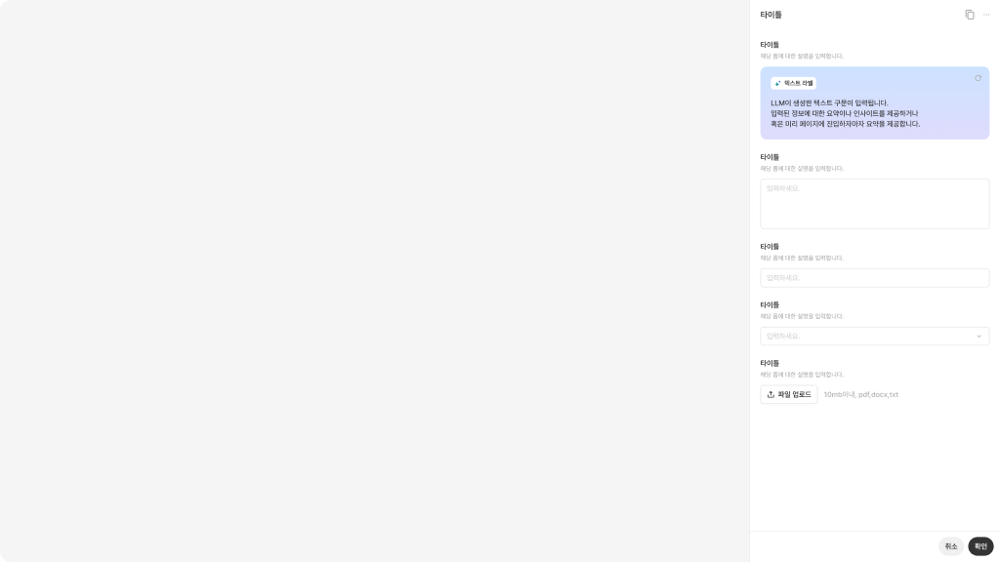
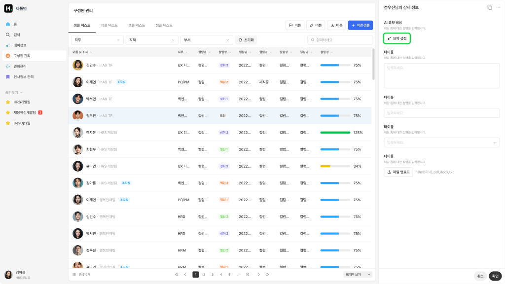
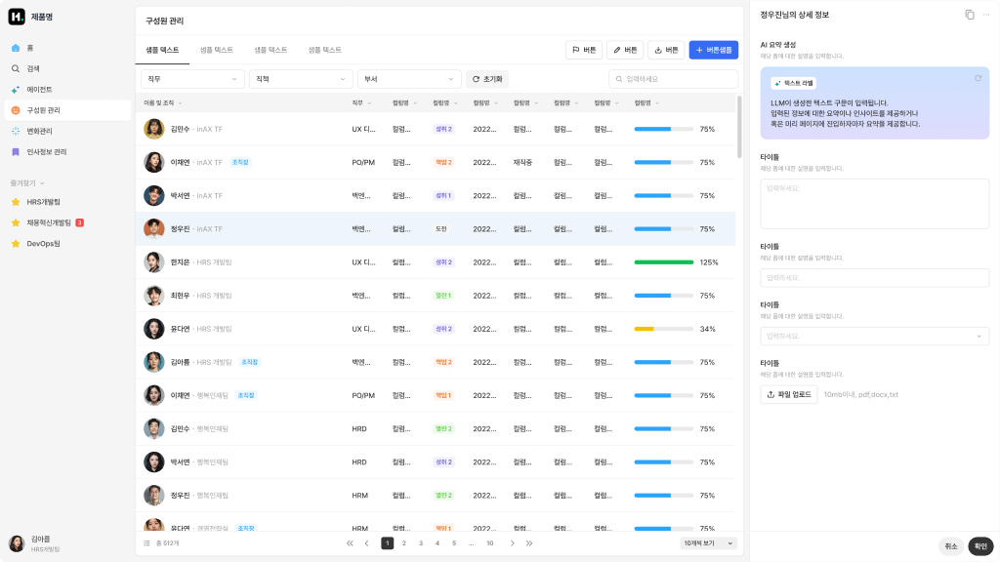
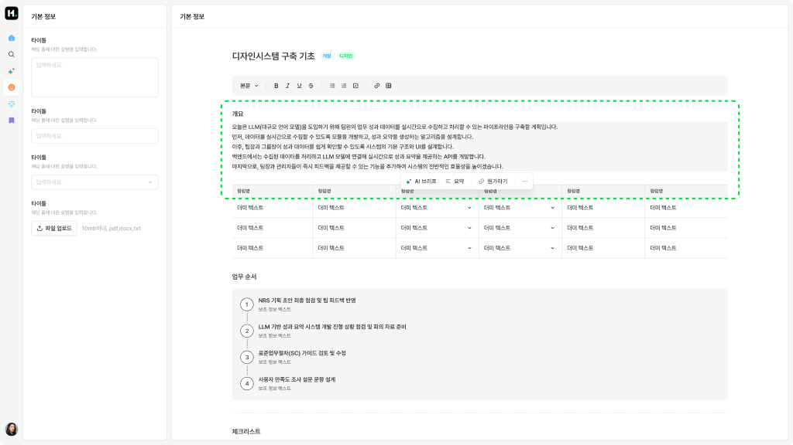
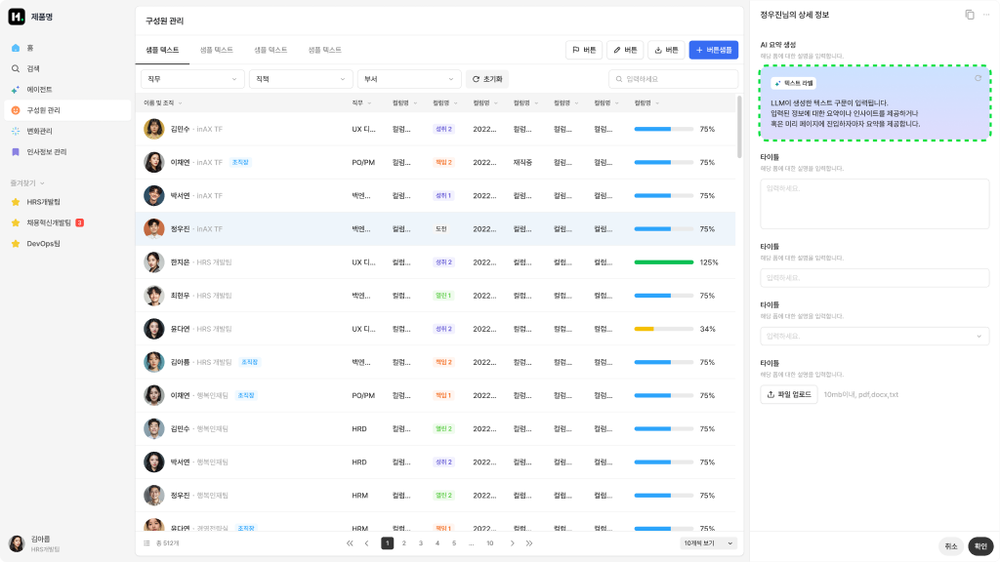
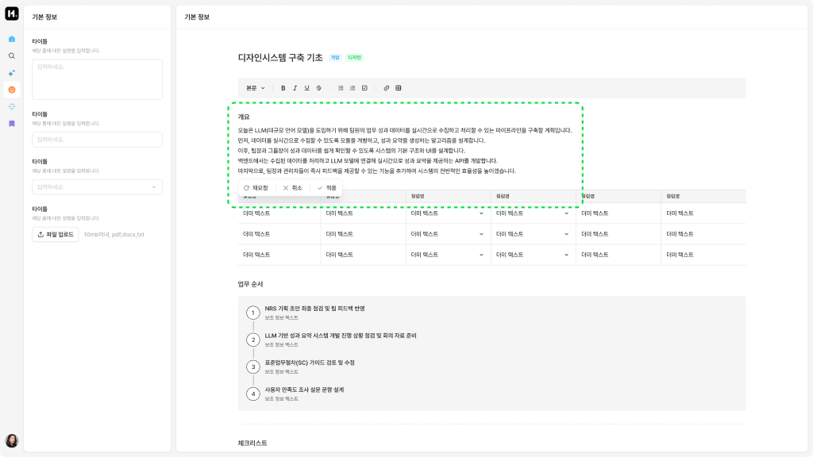

Pattern / Contextual
Embedded AI Elements
사용자가 현재 작업 화면을 벗어나지 않고, 특정 입력 필드·텍스트·콘텐츠 영역 안에서 AI 도움을 받는 경량형 UI 패턴입니다. 추천·수정·요약·설명을 작업 맥락 안에 작게 삽입해 제공하고, 결과를 바로 적용하거나 닫을 수 있습니다.
Overview
Embedded AI Elements는 사용자가 현재 작업 중인 화면을 벗어나지 않고, 특정 입력 필드·텍스트·콘텐츠 영역 안에서 AI 도움을 받을 수 있게 하는 경량형 UI 패턴입니다. AI가 독립된 대화 상대처럼 전면에 등장하기보다, 사용자의 작업 맥락 안에 작게 삽입되어 추천, 수정, 요약, 설명, 인사이트를 제공합니다. 사용자는 현재 화면 흐름을 유지한 채 필요한 순간에만 AI의 도움을 받고, 결과를 바로 적용하거나 닫을 수 있습니다. 이 패턴은 AI를 별도 화면이나 패널로 제공하기보다, 기존 제품 화면 안에 자연스럽게 녹여야 할 때 적합합니다.
이 분류를 선택하는 경우
| 선택 조건 | 설명 |
|---|---|
| 현재 화면의 작업 흐름을 유지해야 한다 | 사용자가 별도 챗 화면이나 작업공간으로 이동하지 않고, 현재 작업 중인 화면 안에서 AI 도움을 받아야 하는 경우 |
| AI 개입 범위가 작고 명확하다 | 특정 문장, 필드, 카드, 섹션, 데이터 영역처럼 AI가 도와야 할 대상이 분명한 경우 |
| 사용자가 짧은 추천이나 수정안을 받아야 한다 | 긴 대화보다 요약, 개선, 추천, 설명, 자동 완성처럼 짧고 즉시 적용 가능한 결과가 필요한 경우 |
| AI 결과를 바로 적용하거나 무시할 수 있어야 한다 | 사용자가 AI 제안을 보고 즉시 적용, 취소, 다시 생성, 상세 보기 중 하나를 선택해야 하는 경우 |
| AI가 주인공이 아니라 보조 역할이어야 한다 | 제품의 기본 작업 화면이 중심이고, AI는 그 흐름을 방해하지 않는 보조 요소로 작동해야 하는 경우 |
이 템플릿을 사용하지 않는 경우
| 선택하지 않는 경우 | 대신 고려할 패턴 |
|---|---|
| 사용자가 AI와 지속적으로 대화하며 요청을 이어가야 한다 | Global Chat Assistant |
| 현재 화면을 유지하되 AI와 어느 정도 긴 대화나 반복 요청이 필요하다 | Contextual Agent Panel |
| AI 결과가 문서, 계획, 분석 결과처럼 별도 작업 영역에서 다뤄져야 한다 | Dedicated Agent Workspace 또는 Chat + Canvas Panel |
Key Characteristics
| 구분 | 내용 |
|---|---|
| 진입 방식 | 텍스트 선택, 필드 포커스, 버튼 클릭, 섹션 내 AI 아이콘, 자동 추천 노출 |
| 입력 방식 | 선택 텍스트, 현재 필드 값, 현재 섹션 데이터, 짧은 자연어 요청 |
| 응답 방식 | 짧은 제안, 수정안, 요약, 설명, 인사이트, 추천 액션 |
| 컨텍스트 활용 | 현재 입력값, 선택 영역, 주변 콘텐츠, 화면 내 데이터 |
| 사용자 흐름 | 대상 선택 → AI 제안 확인 → 적용 또는 취소 → 필요 시 다시 요청 |
| 주요 가치 | 기존 작업 흐름을 유지하면서 필요한 순간에만 AI 도움을 제공 |
주요 예시 레퍼런스
실제 제품에서 Embedded AI Elements 패턴이 어떻게 구현되는지 보여주는 대표 사례입니다.
Grammarly
사용자가 LinkedIn, 이메일, 문서 등에서 글을 작성하는 중에 AI 입력창이나 제안 패널을 띄워 문장을 생성·수정·개선할 수 있습니다. 작성 중인 위치를 벗어나지 않고 Improve it, Simplify it, Shorten it, Adjust tone 같은 빠른 액션을 제공하며, 생성된 결과를 바로 삽입하거나 다시 표현할 수 있습니다. Grammarly는 문장의 명확성, 톤, 길이, 형식성을 조정하는 AI 작성 보조 기능을 제공한다고 설명합니다.

Notion AI
사용자가 Notion 문서 안에서 텍스트를 선택하거나 /AI를 입력해 현재 문맥에 맞는 AI 도움을 호출할 수 있습니다. 선택된 문장이나 문단 바로 아래에 AI 입력창과 액션 메뉴가 노출되며, Improve writing, Fix spelling & grammar, Make longer, Make shorter, Change tone처럼 선택 텍스트에 직접 적용 가능한 작업을 제공합니다. Notion은 사용자가 텍스트를 선택해 Ask AI를 실행하거나 /AI를 입력해 요약, 핵심 내용 추출, 액션 아이템 추출, 번역, 톤 변경 등을 수행할 수 있다고 안내합니다.

Basic Layout Structure
Embedded AI Elements는 화면 전체를 차지하지 않고, 기존 UI 안의 특정 대상 근처에 작게 삽입되는 구조를 가집니다. 하위 분기에 따라 Inline Popover 또는 Insight Block으로 나뉘지만, 기본적으로는 Target Area, AI Entry Point, AI Result Area, Action Area로 구성됩니다.

레이아웃 원칙
| 원칙 | 설명 |
|---|---|
| 작업 흐름 보존 | AI 요소는 기존 화면을 대체하지 않고, 사용자가 하던 작업 위에 자연스럽게 얹혀야 합니다. |
| 대상 명확성 | AI가 어떤 텍스트, 필드, 데이터, 섹션을 기준으로 제안하는지 명확해야 합니다. |
| 경량성 | 긴 대화나 복잡한 설정 없이 짧은 제안과 빠른 액션 중심으로 구성합니다. |
| 즉시 적용성 | 결과를 읽고 끝나는 것이 아니라, 사용자가 바로 적용하거나 무시할 수 있어야 합니다. |
| 방해 최소화 | 자동 노출되는 경우에도 사용자의 입력이나 탐색을 방해하지 않아야 합니다. |
| 확장 가능성 | 짧은 결과로 부족한 경우, 상세 보기나 패널형 UI로 확장될 수 있어야 합니다. |
Variants
Embedded AI Elements는 AI가 화면에 나타나는 위치와 결과를 보여주는 방식에 따라 하위 UI가 나뉩니다.
| 하위 분기 | 한 줄 정의 | 선택 기준 |
|---|---|---|
| Inline Popover | 선택 영역이나 입력 필드 근처에 작게 뜨는 AI 도움 UI | 사용자가 특정 텍스트나 필드에 대해 짧은 수정, 요약, 변환, 추천을 받아야 할 때 |
| Insight Block | 기존 화면 안에 AI 결과를 정보 블록 형태로 노출하는 UI | 사용자가 대화 없이도 화면 안에서 AI 인사이트, 추천, 요약을 확인해야 할 때 |
Inline Popover
사용자가 특정 텍스트, 입력 필드, 객체를 선택했을 때 해당 위치 근처에 작은 AI 컨테이너를 띄워 빠른 도움을 제공하는 UI입니다.

Insight Block
기존 화면의 특정 영역 안에 AI가 생성한 요약, 추천, 설명, 경고, 인사이트를 블록 형태로 표시하는 UI입니다.

Interaction
Trigger - Contextual AI Call
사용자가 텍스트를 선택하거나, 입력 필드에 포커스하거나, 화면 내 AI 아이콘 또는 추천 영역을 통해 AI 도움을 호출합니다.

사용자가 특정 페이지에 진입하거나, 혹은 버튼 등의 상호작용을 통해 Assistant UI를 호출합니다.
호출된 Assistant UI는 목적과 맥락에 따라 형태가 상이하며, 목적에 부합하는 상호작용 방식을 갖습니다.
Input - Local Context
AI는 사용자가 선택한 텍스트, 입력 중인 값, 현재 섹션 데이터, 주변 콘텐츠를 기준으로 요청 맥락을 파악합니다. 필요한 경우 사용자가 짧은 자연어 요청을 추가로 입력할 수 있습니다.

요약 등의 정보를 제공해주는 AI 블록의 경우, 프롬프트 및 참고 데이터가 사전에 입력되어 있는 상태입니다.

인라인으로 도움을 주는 Assistant의 경우 입력은 다양한 형식으로 구성될 수 있습니다.
Output - Embedded Suggestion
AI는 수정안, 요약, 추천, 설명, 인사이트처럼 현재 화면 안에서 바로 판단 가능한 짧은 결과를 제공합니다.

추천, 요약, 인사이트와 같은 내용들은 기본적으로는 자연어로 출력됩니다. 기능과 LLM이 사용하는 도구에 따라 시각화 표현 등으로 확장될 수 있습니다.
Follow up - Apply or Dismiss
사용자는 AI 제안을 적용하거나, 취소하거나, 다시 생성하거나, 상세 보기로 확장할 수 있습니다.

제안에 대한 재요청(Reroll)을 수행할 수 있으며, 기능 및 맥락에 따라 적용/취소 등 추가적인 액션을 설계할 수 있습니다.